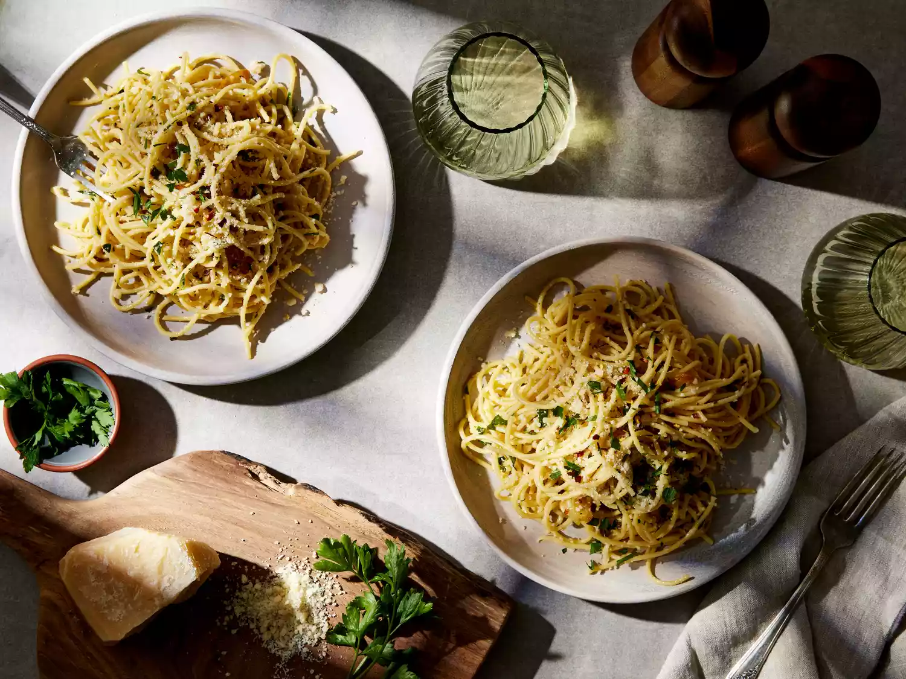

Home
Spaghetti-aglio-e-olio

Spaghetti aglio e olio is a pasta dish typical of the city of Naples, Italy. It is popular because it is simple
to prepare and makes use of inexpensive, readily available ingredients that have long shelf lives in a pantry.
The dish was once also known as vermicelli alla Borbonica.
Ingredients
- 200g spaghetti
- 3 tbsp olive oil
- 4 garlic cloves (sliced)
- 1 tsp chili flakes
- Salt (to taste)
- Fresh parsley (chopped, for garnish)
Steps
- Boil spaghetti in salted water until al dente.
- Heat olive oil in a pan, add sliced garlic and sauté lightly.
- Add chili flakes and a ladle of pasta water.
- Drain spaghetti and add to the pan.
- Toss well to coat with garlic oil.
- Season with salt and garnish with parsley before serving.